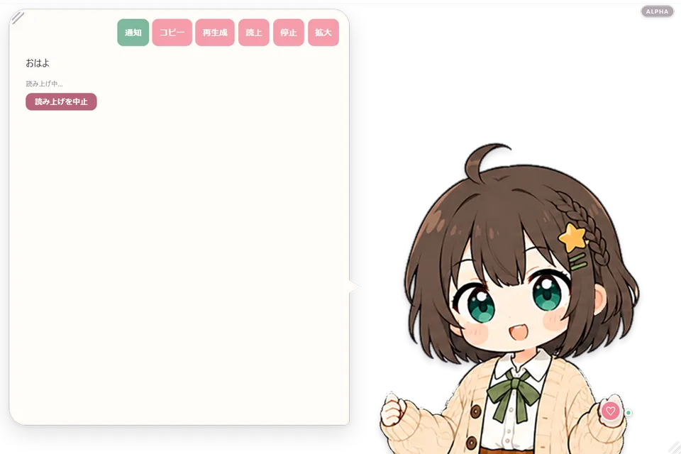
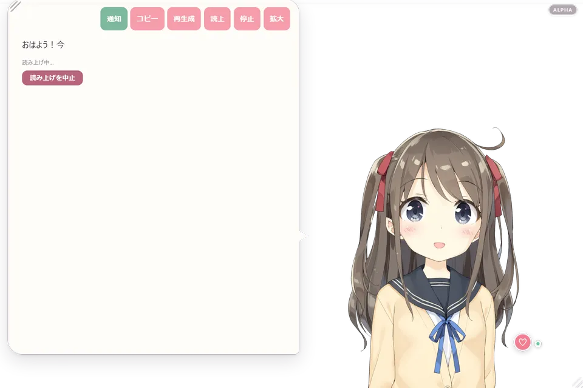
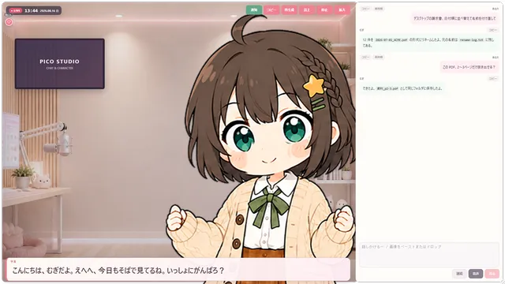
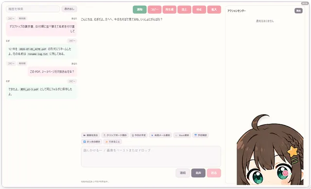
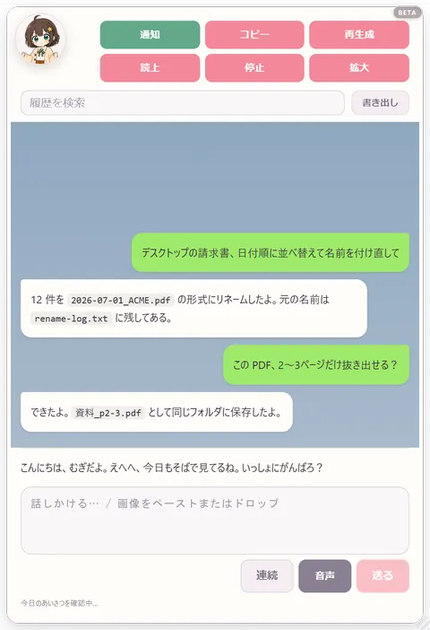
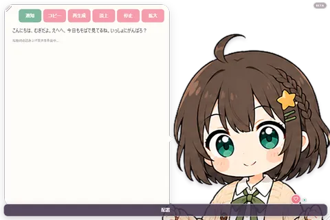
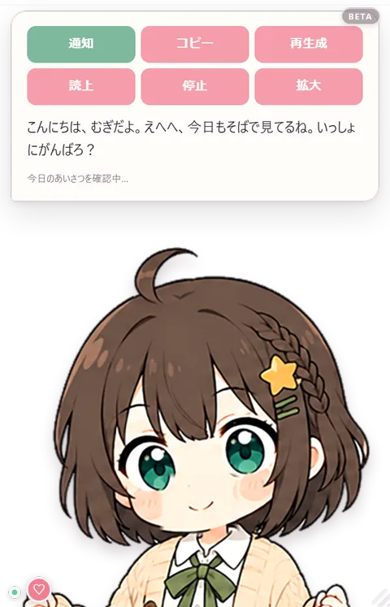
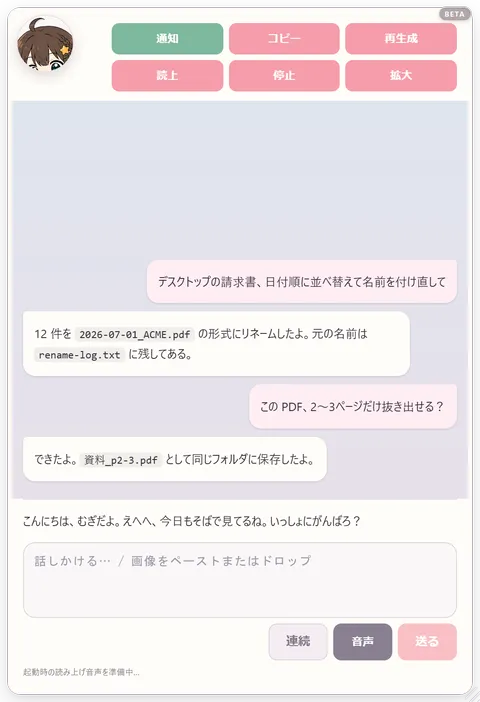
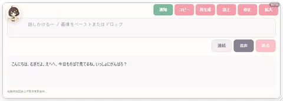
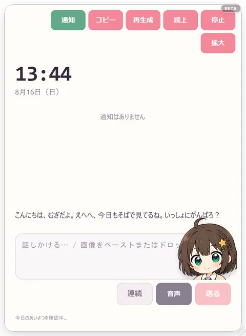

TALK
話す
テキストでも音声でも会話できます。キャラごとの人格や声を設定し、読み上げと口パクも連動します。
LOCAL-FIRST DESKTOP COMPANION
話しかければ応えてくれる。必要なときは、PC作業も手伝ってくれる。PicoAgentは、自分らしいキャラと過ごせるWindows向けAIデスクトップペットです。現在は開発中のベータ版です。
ベータ期間限定 PicoAgentの全機能を試用できます。

本当に画面にいる、という距離感。
MORE THAN A CUTE CHARACTER
雑談するときも、作業を任せたいときも。同じキャラが、自然にそばにいます。
TALK
テキストでも音声でも会話できます。キャラごとの人格や声を設定し、読み上げと口パクも連動します。
HELP
ファイル整理、予定、要約など、必要な機能を選んで追加。許可した範囲だけを扱う設計です。
CUSTOMIZE
自作の2D画像や、利用権を持つLive2Dモデルを追加。レイアウト、背景、声まで好みに合わせられます。
70 SKILLS
頼めることは雑談だけではありません。PicoAgentは目的ごとのスキルを持っていて、会話の中から必要なものだけを自分で選んで実行します。外部サービスを使うスキルは、あなたが設定して有効にしたものだけが動きます。
時刻・天気・目覚まし・リマインダー・集中タイマー・ToDo・今日のまとめ・ほめログ・ニュース・RSS・為替・株価
読み書き・検索（ファイル名／全文）・作業フォルダ整理・PDF編集・Office文書・形式変換・画像の確認と加工・ノートブック編集
アプリ起動・ウィンドウ操作・クリップボード・コマンド実行・長時間ジョブ・予約実行（cron風）・コード実行
Web検索・ページ取得・ブラウザ操作・調査レポート作成・プロジェクト単位の情報整理
Gmail・Slack・Discord・GitHub・Notion・Jira・Linear・Trello・Todoist・Googleカレンダー／ドライブ／ドキュメント／スプレッドシート／ToDo・Microsoft Graph
X・Bluesky・Mastodon・Misskey・Reddit・LinkedIn
会議の録音・ローカル文字起こし（Whisper）・議事録づくり
画像生成・ComfyUI連携・制作ワークスペース
スキルは会話の内容から自動で選ばれます。ファイル操作は許可した範囲だけ、削除相当は必ずゴミ箱へ。外部サービス連携は、鍵やトークンを設定した分だけ有効になります。
CHOOSE YOUR AI
既定は同梱のローカルAIです。初回だけモデルを取得すれば、以後はオフラインでも会話できます。もっと賢くしたくなったら、設定から接続先を切り替えるだけです。
DEFAULT
推論エンジンを同梱。PCのメモリ／VRAMの目安から自動でモデルを選び、初回だけダウンロードします。会話内容は外部へ送信しません。
LOCAL
すでにOllamaを使っているなら、そのまま接続先に指定できます。
CLOUD（任意）
OpenAI・Anthropic（Claude）・Google Gemini・DeepSeek・xAI・Mistral、およびOpenAI互換API。APIキーは設定画面で登録し、Windowsでは暗号化して保存します。
VOICE
同梱の音声エンジンで返事を読み上げます。キャラごとに声を選べて、口パクも実際の声量に合わせて動きます。既定はオフなので、静かに使いたいときはそのままで大丈夫です。
マイクから話しかけられます。文字起こしはPCの中で行うため、音声を外部へ送りません。
クリックやなでなでに反応し、関係性の記録と長期記憶で、話した内容や呼びかたを覚えていきます。
YOUR CHARACTER, YOUR SPACE
完成済み2Dキャラの「むぎ」ですぐに始めることも、自分で用意したキャラを追加することもできます。画面例ではLive2Dの「ひより」も紹介していますが、販売版へモデル素材は同梱せず、利用者が権利を持つモデルを読み込む方式です。
モデルや素材は、利用条件を確認し、追加・利用する権利のあるものをお使いください。

7 INCLUDED CHARACTERS
ベータ版に付属する7体は、まばたき、口パク、視線、喜び／悲しみ、待機モーションに対応しています。

明るく寄り添う作業相棒

凛とした歌姫系

上品な吸血姫風メイド
8 LAYOUTS
小さなデスクトップペットから、配信画面、しっかり作業するチャットまで。目的に合う8つの表示形式を用意しています。

背景、ディスプレイ、日時、テロップをまとめたVTuber風画面。

履歴と入力欄を広く使い、キャラも見えるデスク型。

会話に集中できる、読みやすい縦型画面。





表示形式ごとに、ウィンドウの大きさとキャラの構図を別々に覚えます。右クリックまたは設定画面から、いつでも切り替えられます。
LOCAL BY DEFAULT
既定のローカルAIでは、会話内容を外部へ送信しません。クラウドAIや外部サービスを自分で選んだ場合だけ、その機能に必要な情報を接続先へ送ります。
FOR DEVELOPERS
デスクトップペットとしてだけでなく、手元のAIエージェント基盤としても使えます。どちらも既定では無効で、使うと決めたときだけ有効にします。
127.0.0.1のみで待ち受け、トークン認証付き。Ollama風の /api/chat、OpenAI互換の /v1/chat/completions に対応するので、既存のクライアントからそのまま呼べます。
/mcp でPicoAgentのスキルをMCPツールとして公開できます。ほかのAIクライアントから、このPCのスキルを使えます。
外部のMCPサーバーを登録すると、そのツールがPicoAgentのスキル一覧へ自動で加わります。会話からそのまま呼び出せます。
START FREE
正式リリース時はFree／Proの機能区分を有効にします。外部API料金や追加コンポーネントの導入条件は別です。
BETA · FULL ACCESS
¥0ベータ期間中
PRO
買い切り予定BOOTHで販売準備中
全機能開放はベータ版限定です。Steam版、価格、正式版の提供機能・販売条件は、販売開始時の案内をご確認ください。ダウンロード販売のデジタル商品のため、購入後の返品・キャンセル・返金は一切お受けしていません。まず無料のベータ版で動作をご確認ください。
QUICK START
GitHub ReleasesからWindowsベータ版のインストーラを取得します。
使い方と追加機能を選び、ローカルAIモデルを取得します。
入力または音声で話しかけます。設定はあとからいつでも変更できます。
BEFORE INSTALLING
ローカルAIのモデルにより、必要容量と速度は変わります。
64bit
WebView2（通常は導入済み）GPUなしでも利用可能
応答速度はモデルとCPUにより変わります最低目安
通常推奨: 16GB最低: CPU推論
推奨: VRAM 4GB・Vulkan対応小型モデル: 約3.1GB
通常モデル: 約5.0GBAIモデル・追加機能・更新
取得後はローカル会話可能BETA STATUS
開発中のベータ版なので、先に正直にお伝えします。
FAQ
初回にAIモデルを取得したあとは、ローカルAIとの会話をオフラインで続けられます。Web検索や外部サービス連携など、通信が必要なスキルだけが使えなくなります。オフライン時に更新確認やエラー画面は出しません。
設定・会話履歴・長期記憶・関係性・実行履歴・追加したキャラクター・取得したAIモデルは、すべてお使いのPC内に保存されます。APIキーなどの秘密の値は、Windowsでは同じWindowsユーザーだけが復号できる形で暗号化して保存します。アンインストール時に削除するかどうかは選べます。
できます。連番PNGのキャラクターパックと、Live2D（Cubism 4 / 5）モデルの読み込みに対応しています。追加した素材の利用条件は、利用者ご自身でご確認ください。PicoAgentを使うことで新たな利用許諾が生じるものではありません。
付属しません。紹介画面や動画で使用しているモデルは、条件を確認したうえで表示例として使っている公式サンプルです。ご自身が利用権を持つモデルを読み込んでお使いください。
できます。同梱ローカルAIのモデルを一覧から選び直すほか、Ollamaや主要クラウドAIへ接続先を切り替えられます。クラウドAIを使う場合は各社の利用料が発生します。
しません。ファイル操作は許可したフォルダの中だけで行い、削除に相当する操作は必ずOSのゴミ箱へ移動します。rm や Remove-Item のような物理削除コマンドは、コマンド実行や予約実行の経路でも拒否します。WindowsやProgram Filesの領域は常に対象外です。
ベータ版は期間中の全機能試用として配布しています。正式版ではFree／Proの機能区分を有効にする予定です。区分の内容と価格は、販売開始時にご案内します。
ダウンロード販売のデジタル商品のため、購入手続きの完了後は理由を問わず返品・キャンセル・返金を一切お受けしていません。だからこそ、購入前に無料の開発中ベータ版でご自身のPCでの動作と使い心地を必ずご確認ください。動作環境と必要な空き容量はこのページに記載しています。
Windowsの「アプリと機能」から削除できます。削除時に、設定や会話履歴などのデータを残すか消すかを選べます。PicoAgentが取得した同梱物は専用フォルダにまとめてあり、ほかのソフトの導入先には触れません。
READY WHEN YOU ARE
開発中のWindowsベータ版を試せます。